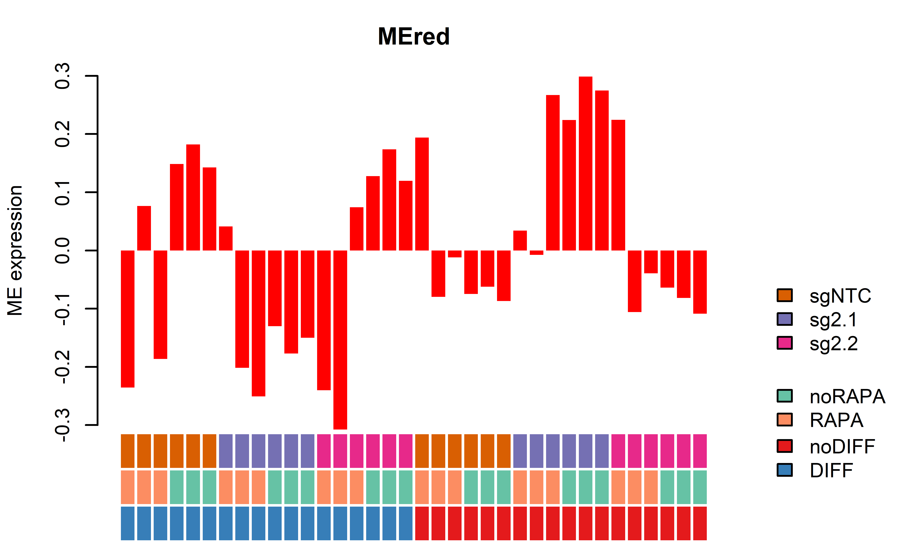
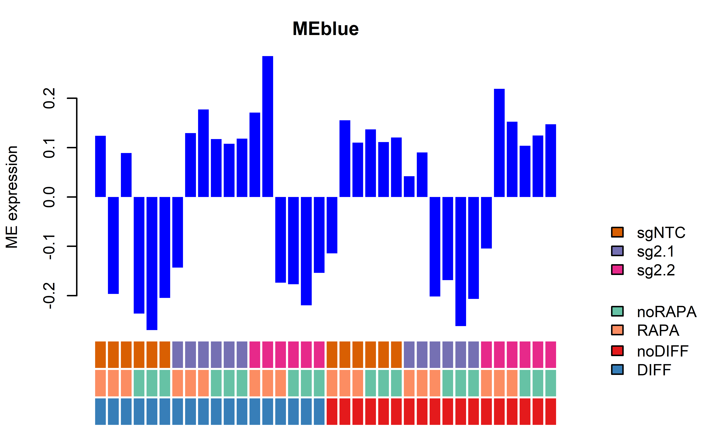
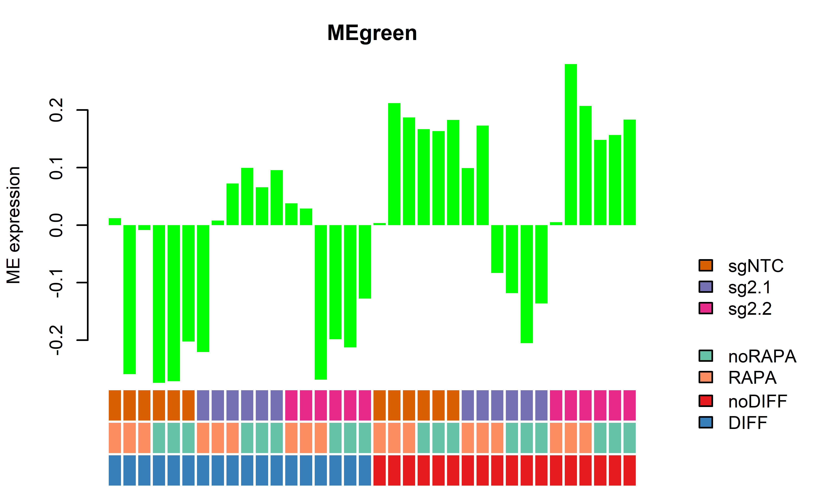
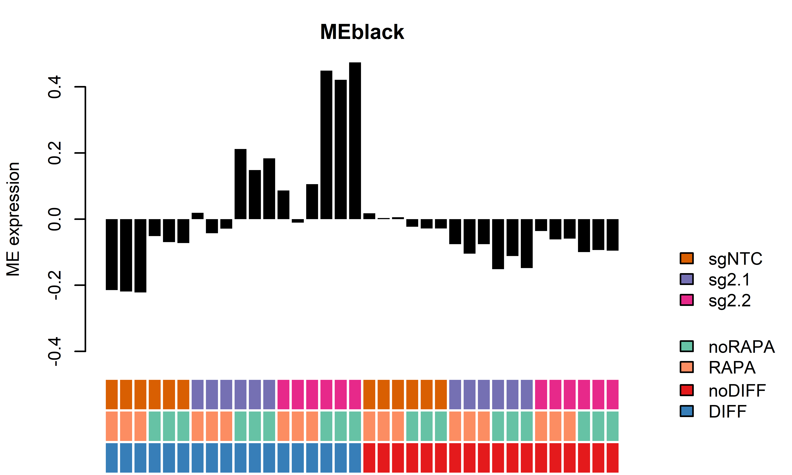
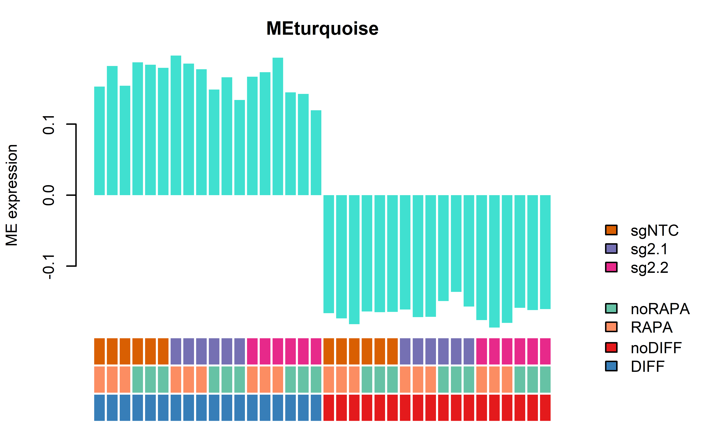
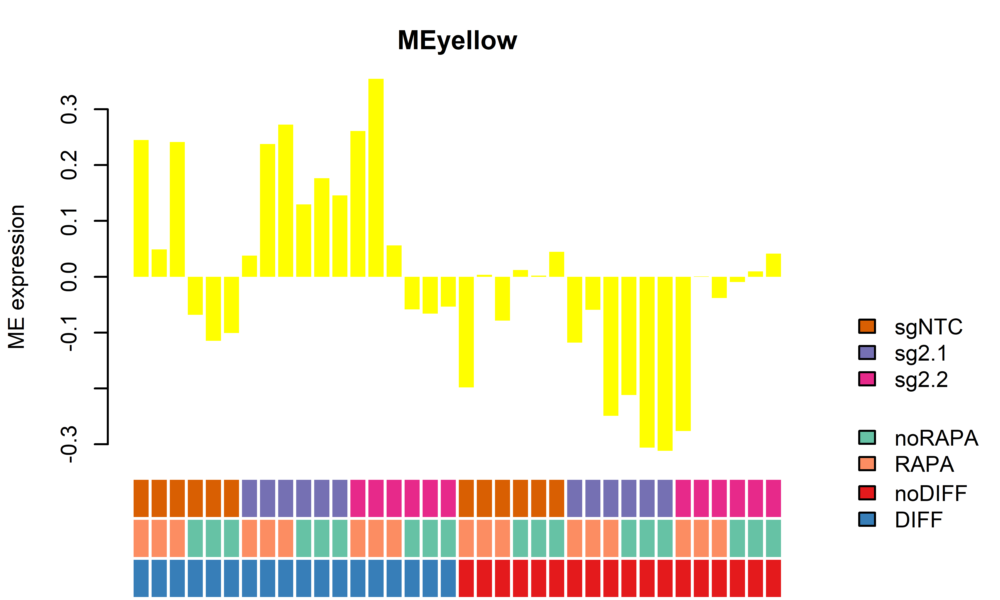
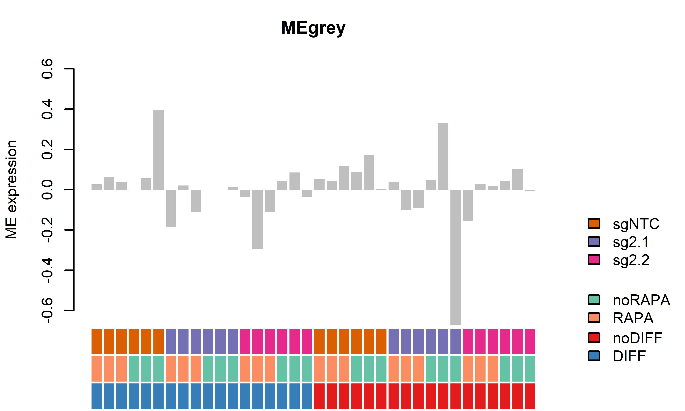

WGCNA
AGC, AY
22 3 2021
Last updated: 2022-10-04
Checks: 7 0
Knit directory: DEPDC5_D62_Analysis/
This reproducible R Markdown analysis was created with workflowr (version 1.7.0). The Checks tab describes the reproducibility checks that were applied when the results were created. The Past versions tab lists the development history.
Great! Since the R Markdown file has been committed to the Git repository, you know the exact version of the code that produced these results.
Great job! The global environment was empty. Objects defined in the global environment can affect the analysis in your R Markdown file in unknown ways. For reproduciblity it’s best to always run the code in an empty environment.
The command set.seed(20220808) was run prior to running
the code in the R Markdown file. Setting a seed ensures that any results
that rely on randomness, e.g. subsampling or permutations, are
reproducible.
Great job! Recording the operating system, R version, and package versions is critical for reproducibility.
Nice! There were no cached chunks for this analysis, so you can be confident that you successfully produced the results during this run.
Great job! Using relative paths to the files within your workflowr project makes it easier to run your code on other machines.
Great! You are using Git for version control. Tracking code development and connecting the code version to the results is critical for reproducibility.
The results in this page were generated with repository version 59a7df2. See the Past versions tab to see a history of the changes made to the R Markdown and HTML files.
Note that you need to be careful to ensure that all relevant files for
the analysis have been committed to Git prior to generating the results
(you can use wflow_publish or
wflow_git_commit). workflowr only checks the R Markdown
file, but you know if there are other scripts or data files that it
depends on. Below is the status of the Git repository when the results
were generated:
Ignored files:
Ignored: .DS_Store
Ignored: .Rhistory
Ignored: .Rproj.user/
Untracked files:
Untracked: output/figure1.pdf
Untracked: output/~$Diff_refnoRAPA_allgenes.xlsx
Unstaged changes:
Modified: _workflowr.yml
Modified: analysis/05_D62_Statistical_analysis.Rmd
Deleted: analysis/Clipboard
Modified: output/Diff_refnoRAPA_allgenes.xlsx
Modified: output/GOres_D62DIFFRAPA.xlsx
Modified: output/GOres_D62DIFFnoRAPA.xlsx
Modified: output/GOres_D62noDIFFRAPA.xlsx
Modified: output/GOres_D62noDIFFnoRAPA.xlsx
Modified: output/GOres_Rescue_DIFF.xlsx
Modified: output/GOres_Rescue_noDIFF.xlsx
Modified: output/Restab_D62_NTCnoRAPA_DIFF_RAPA.xlsx
Modified: output/Restab_D62_NTCnoRAPA_DIFF_noRAPA.xlsx
Modified: output/Restab_D62_NTCnoRAPA_noDIFF_RAPA.xlsx
Modified: output/Restab_D62_NTCnoRAPA_noDIFF_noRAPA.xlsx
Modified: output/Restab_D62_NTCwRAPA_DIFF_RAPA.xlsx
Modified: output/Restab_D62_NTCwRAPA_noDIFF_RAPA.xlsx
Modified: output/noDiff_refnoRAPA_allgenes.xlsx
Modified: wflow_helper.R
Note that any generated files, e.g. HTML, png, CSS, etc., are not included in this status report because it is ok for generated content to have uncommitted changes.
These are the previous versions of the repository in which changes were
made to the R Markdown (analysis/04_D62_WGCNA.Rmd) and HTML
(docs/04_D62_WGCNA.html) files. If you’ve configured a
remote Git repository (see ?wflow_git_remote), click on the
hyperlinks in the table below to view the files as they were in that
past version.
| File | Version | Author | Date | Message |
|---|---|---|---|---|
| Rmd | 3f72d3a | Andreas Geburtig-Chiocchetti | 2022-08-26 | full analysis pre manuscript version |
| html | 3f72d3a | Andreas Geburtig-Chiocchetti | 2022-08-26 | full analysis pre manuscript version |
| html | ddade00 | achiocch | 2022-08-19 | Build site. |
| Rmd | 4bd303c | achiocch | 2022-08-19 | wflow_publish(c("./*")) |
| Rmd | 974c39d | achiocch | 2022-08-18 | wflow_publish(c("./*")) |
| html | 974c39d | achiocch | 2022-08-18 | wflow_publish(c("./*")) |
| html | dc78d32 | Andreas Geburtig-Chiocchetti | 2022-08-09 | full analysis pre manuscript version |
| Rmd | f249225 | achiocch | 2022-08-08 | adds data and code |
home = getwd()WGCNA
soft thresholding
allowWGCNAThreads()Allowing multi-threading with up to 8 threads.dds2 = DESeq(ddsMat)using pre-existing size factorsestimating dispersionsfound already estimated dispersions, replacing thesegene-wise dispersion estimatesmean-dispersion relationshipfinal dispersion estimatesfitting model and testingvsd = getVarianceStabilizedData(dds2)
WGCNA_matrix <- t(log2(vsd+1)) #Need to transform for further calculations
#s = abs(bicor(WGCNA_matrix)) #biweight mid-correlation
powers = c(c(1:10), seq(from = 12, to=20, by=2))
sft = pickSoftThreshold(WGCNA_matrix, powerVector = powers, verbose = 5)pickSoftThreshold: will use block size 3258.
pickSoftThreshold: calculating connectivity for given powers...
..working on genes 1 through 3258 of 13731
..working on genes 3259 through 6516 of 13731
..working on genes 6517 through 9774 of 13731
..working on genes 9775 through 13032 of 13731
..working on genes 13033 through 13731 of 13731
Power SFT.R.sq slope truncated.R.sq mean.k. median.k. max.k.
1 1 0.234 -0.862 0.909 2910.00 2.82e+03 4940
2 2 0.827 -1.350 0.978 983.00 8.49e+02 2630
3 3 0.935 -1.470 0.984 425.00 3.07e+02 1700
4 4 0.949 -1.490 0.971 216.00 1.24e+02 1230
5 5 0.949 -1.480 0.963 124.00 5.48e+01 945
6 6 0.946 -1.450 0.956 77.20 2.56e+01 759
7 7 0.938 -1.420 0.948 51.50 1.26e+01 627
8 8 0.943 -1.390 0.955 36.10 6.42e+00 530
9 9 0.937 -1.360 0.952 26.40 3.40e+00 456
10 10 0.943 -1.330 0.959 19.90 1.84e+00 397
11 12 0.938 -1.300 0.963 12.20 5.84e-01 311
12 14 0.937 -1.270 0.969 8.08 1.99e-01 251
13 16 0.939 -1.250 0.974 5.62 7.26e-02 207
14 18 0.932 -1.250 0.970 4.06 2.83e-02 174
15 20 0.931 -1.250 0.973 3.03 1.15e-02 148par(mfrow = c(1,2))
cex1 = 0.9;
plot(sft$fitIndices[,1], -sign(sft$fitIndices[,3])*sft$fitIndices[,2],
xlab="Soft Threshold (power)",ylab="Scale Free Topology Model Fit, signed R^2",
type="n", main = paste("Scale independence"));
text(sft$fitIndices[,1], -sign(sft$fitIndices[,3])*sft$fitIndices[,2],
labels=powers,cex=cex1,col="red");
abline(h=0.80,col="red")
plot(sft$fitIndices[,1], sft$fitIndices[,5],xlab="Soft Threshold (power)",ylab="Mean Connectivity", type="n",main = paste("Mean connectivity"))
text(sft$fitIndices[,1], sft$fitIndices[,5], labels=powers, cex=cex1,col="red")
Identify Gene Modules
softPower = 6;
# The point where the curve flattens
#calclute the adjacency matrix
if(reanalyze | !file.exists(paste0(output,"/D62_WGCNA_adj_TOM.RData"))){
#adj= adjacency(WGCNA_matrix,type = "unsigned", power = softPower);
#Converting adjacency matrix into To so that the noise could be reduced
TOM=TOMsimilarityFromExpr(WGCNA_matrix,networkType = "unsigned",
TOMType = "unsigned", power = softPower);
save(list = c(
#"adj",
"TOM"), file=paste0(output,"/D62_WGCNA_adj_TOM.RData"))
} else {
load(paste0(output,"/D62_WGCNA_adj_TOM.RData"))
}TOM calculation: adjacency..
..will use 8 parallel threads.
Fraction of slow calculations: 0.000000
..connectivity..
..matrix multiplication (system BLAS)..
..normalization..
..done.SubGeneNames<-colnames(WGCNA_matrix)
colnames(TOM) =rownames(TOM) =SubGeneNames
dissTOM=1-TOM
diag(dissTOM) = 0
#hierarchical clustering
geneTree = flashClust(as.dist(dissTOM),method="average");
#plot the resulting clustering tree (dendrogram)
# plot(geneTree, xlab="", sub="",cex=0.3, main="Module clustering prio to merging");
#Set the minimum module size
minModuleSize = 50;
#Module identification using dynamic tree cut
dynamicMods = cutreeDynamic(dendro = geneTree,
distM = dissTOM,
cutHeight = 0.998,
minClusterSize = minModuleSize,
deepSplit=2,
pamRespectsDendro = T) ..done.#the following command gives the module labels and the size of each module. Lable 0 is reserved for unassigned genes
#table(dynamicMods)
#Plot the module assignment under the dendrogram; note: The grey color is reserved for unassigned genes
dynamicColors = labels2colors(dynamicMods)
table(dynamicColors)dynamicColors
black blue brown green grey red turquoise yellow
276 2306 1716 1024 404 658 6000 1347 plotDendroAndColors(geneTree, dynamicColors, "Dynamic Tree Cut",
dendroLabels = FALSE, hang = 0.03,
addGuide = TRUE,
guideHang = 0.05,
main = "Gene dendrogram and module colors")
diag(dissTOM) = NA;#Visualize the Tom plot. Raise the dissimilarity matrix to the power of 4 to bring out the module structure
TOMplot(dissTOM^4, geneTree, as.character(dynamicColors), main="weighted distance of Topological overlap Matrix")
Module eigengenes
Identify and Merge correlated modules
#calculate eigengenes
MEList = moduleEigengenes(WGCNA_matrix, colors = dynamicColors)
MEs = MEList$eigengenes
plotEigengeneNetworks(MEs, "Eigengenes_before_merging",
marDendro = c(0,4,1,2), marHeatmap = c(3,4,1,2))
MEList_new = mergeCloseModules(WGCNA_matrix, colors = dynamicColors, MEs = MEs, cutHeight = 0.05) mergeCloseModules: Merging modules whose distance is less than 0.05
Calculating new MEs...plotEigengeneNetworks(MEList_new$newMEs, "Eigengenes_after_merging",
marDendro = c(0,4,1,2), marHeatmap = c(3,4,1,2))
MEs = MEList_new$newMEs
coldata_all = colData(ddsMat) %>% as.data.frame() %>%
select(-grep("ME", colnames(colData(ddsMat)), value = T)) %>%
cbind(MEs[colnames(ddsMat),]) %>% DataFrame()
colData(ddsMat) = coldata_all
colors_new = MEList_new$colors
mcols(ddsMat) = cbind(mcols(ddsMat)%>% as.data.frame() %>% select(-contains("cluster")), data.frame(cluster=colors_new)) %>% DataFrame()
save(ddsMat, file=paste0(output,"/D62_dds_matrix.RData"))Heatmaps MEs
#colors for plotting heatmap
colors <- rev(colorRampPalette(brewer.pal(9, "Spectral"))(255))
gRNAcol = Dark8[c(1:nlevels(SampleInfo$gRNA))+nlevels(SampleInfo$CellLine)]
names(gRNAcol) = levels(SampleInfo$gRNA)
diffcol = brewer.pal(3,"Set1")[1:nlevels(SampleInfo$DIFF)]
names(diffcol) = levels(SampleInfo$DIFF)
rapacol = brewer.pal(3,"Set2")[1:nlevels(SampleInfo$RAPA)]
names(rapacol) = levels(SampleInfo$RAPA)
clustcol = gplots::col2hex(unique(as.character(mcols(ddsMat)$cluster)))
names(clustcol) = unique(as.character(mcols(ddsMat)$cluster))
rownames(WGCNA_matrix)=SampleInfo[rownames(WGCNA_matrix), "label_rep"]
ann_colors = list(
DIFF = diffcol,
RAPA = rapacol,
gRNA = gRNAcol,
cluster = clustcol)
idx=order(SampleInfo$gRNA, SampleInfo$DIFF,SampleInfo$RAPA)
WGCNA_matrix_sorted=WGCNA_matrix[SampleInfo$label_rep[idx], order(colors_new)]
collabels = SampleInfo[idx,c("gRNA","DIFF", "RAPA")] %>%
mutate_all(as.character) %>% as.data.frame()
rownames(collabels)=SampleInfo$label_rep[idx]
genlabels = data.frame(cluster = as.character(colors_new)[order(colors_new)])
rownames(genlabels) = colnames(WGCNA_matrix_sorted)
MElabels = data.frame(cluster = gsub("ME", "",colnames(MEs)))
rownames(MElabels) = colnames(MEs)
clustcol = gplots::col2hex(unique(as.character(MElabels$cluster)))
names(clustcol) = as.character(MElabels$cluster)
ann_colors = list(
DIFF = diffcol,
RAPA = rapacol,
gRNA = gRNAcol,
cluster = clustcol)
rownames(MEs) = SampleInfo[rownames(MEs),"label_rep"]
pheatmap(t(MEs[idx,]),
border_color = NA,
annotation_row = MElabels,
annotation_col = collabels,
cluster_cols = F,
show_rownames = F, show_colnames = F,
clustering_method = "ward.D2",
annotation_colors = ann_colors,
scale="row",
breaks = seq(-2, 2,length.out=255),
col = colors,
main = "eigengene values")
SampleInfo = as.data.frame(colData(ddsMat))
MEMat = SampleInfo[,grep("ME", colnames(SampleInfo))]
## helper functions#test differences
testit=function(Dataset, samples = Set,
depvar){
data = Dataset[samples,]
res=list()
for(i in grep("ME", colnames(data), value = T)){
res[[i]]=lm(as.formula(paste0(i,"~1+",depvar)), data)
}
return(res)
}
# extract coefficents
getcoefff=function(x){
res = summary(x)$coefficients[2,]
return(res)
}
# comparisonME
comparisonME = function(SampleInfo, Set, target){
LMlist=testit(Dataset = SampleInfo, samples = Set, depvar=target)
coeff = as.data.frame(lapply(LMlist, getcoefff) %>% do.call(rbind, .))
coeff$padj = p.adjust(coeff$`Pr(>|t|)`, "bonferroni")
return(coeff)}
## comparisons against noRAPA NTC
Rapamycin=c("noRAPA", "RAPA")
Differentiation=c("noDIFF", "DIFF")
Type_sgRNA<-c("sg2.1","sg2.2")
target="KO"
r = Rapamycin[1]
d = Differentiation[1]
Tp = Type_sgRNA[[1]]
# no random effects included
for(r in Rapamycin){
Rapafilter = SampleInfo$RAPA %in% r
for(d in Differentiation){
Difffilter = SampleInfo$DIFF %in% d
for(Tp in Type_sgRNA){
sgRNAfilter = SampleInfo$gRNA %in% Tp
vs_label=paste0(c("sgNTC", Tp), sep="", collapse="_")
Set = rownames(SampleInfo)[Rapafilter&Difffilter&
sgRNAfilter]
Set = c(Set, rownames(SampleInfo)[SampleInfo$RAPA == "noRAPA" & Difffilter&
SampleInfo$gRNA == "sgNTC"])
lab = paste("restabWGCNA", "D62_NTCnoRAPA", vs_label, d,r, sep="_")
assign(lab, comparisonME(SampleInfo, Set, target))
}
}
}
# comparison agains RAPANTC
Rapamycin=c("noRAPA", "RAPA")
Differentiation=c("noDIFF", "DIFF")
Type_sgRNA<-list(c("sgNTC","sg2.1"),c("sgNTC", "sg2.2"))
target="KO"
# comparison agains RAPANTC
for(r in Rapamycin){
Rapafilter = SampleInfo$RAPA %in% r
for(d in Differentiation){
Difffilter = SampleInfo$DIFF %in% d
for(Tp in Type_sgRNA){
sgRNAfilter = SampleInfo$gRNA %in% Tp
vs_label=paste0(Tp, sep="", collapse="_")
Set = rownames(SampleInfo)[Rapafilter&Difffilter&
sgRNAfilter]
lab = paste("restabWGCNA", "D62_NTCwRAPA", vs_label, d,r, sep="_")
assign(lab, comparisonME(SampleInfo, Set, target))
}
}
}
comparisons= apropos("restabWGCNA_D62")
save(list = comparisons, file = paste0(home,"/output/D62_ResTabs_WGCNA.RData"))mypval=0.05
MEIds = rownames(get(apropos("restabWGCNA")[1]))
getWGCNAoutputs = function(targetline="D62",targetdiff,
targetrapa, refset="NTCnoRAPA", plotset=T){
if(refset=="NTCnoRAPA"){
samplesincl=SampleInfo$DIFF==targetdiff &
SampleInfo$RAPA==targetrapa &
SampleInfo$KO == "KO"
samplesincl = samplesincl | (SampleInfo$DIFF==targetdiff &
SampleInfo$RAPA=="noRAPA" &
SampleInfo$KO == "WT")} else {
samplesincl=SampleInfo$DIFF==targetdiff &
SampleInfo$RAPA==targetrapa
}
pvalrep= get(paste0("restabWGCNA_",
targetline,"_",refset, "_sgNTC_sg2.1_",
targetdiff, "_" ,
targetrapa))$padj<=mypval &
get(paste0("restabWGCNA_",
targetline, "_",refset, "_sgNTC_sg2.2_",
targetdiff, "_" ,
targetrapa))$padj<=mypval
betarep = apply(cbind(get(paste0("restabWGCNA_",
targetline, "_",refset, "_sgNTC_sg2.1_",
targetdiff, "_" ,
targetrapa))$Estimate,
get(paste0("restabWGCNA_",
targetline, "_",refset, "_sgNTC_sg2.2_",
targetdiff, "_" ,
targetrapa))$Estimate), 1,
samesign)
idx=which(betarep & pvalrep)
hits=MEIds[idx]
restab=data.frame(
Module = MEIds,
beta_2.1 = get(paste0("restabWGCNA_",
targetline,"_",refset, "_sgNTC_sg2.1_",
targetdiff, "_" ,
targetrapa))$Estimate,
bonferroni_2.1 = get(paste0("restabWGCNA_",
targetline, "_",refset, "_sgNTC_sg2.1_",
targetdiff, "_" ,
targetrapa))$padj,
beta_2.2 = get(paste0("restabWGCNA_",
targetline,"_",refset, "_sgNTC_sg2.2_",
targetdiff, "_" ,
targetrapa))$Estimate,
bonferroni_2.2 = get(paste0("restabWGCNA_",
targetline, "_",refset, "_sgNTC_sg2.2_",
targetdiff, "_" ,
targetrapa))$padj)
print(restab)
write.xlsx(restab, file=paste0(output, "/Restab_",
targetline,"_",refset, "_",
targetdiff, "_",
targetrapa, ".xlsx"))
SamplesSet=SampleInfo[samplesincl,] %>% select(all_of(hits))
if(plotset){
EigengenePlot(SamplesSet, SampleInfo, samplesincl)}
}Eigengene plots all modules
EigengenePlot(data=SampleInfo[,grep("ME", colnames(SampleInfo))],
Sampledata = SampleInfo,
samplesincl=rep(T, nrow(SampleInfo)))






WGCNA module plots only D62
KO effect in noDIFF noRAPA
D62
getWGCNAoutputs(targetdiff = "noDIFF",targetrapa = "noRAPA", plotset = T) Module beta_2.1 bonferroni_2.1 beta_2.2 bonferroni_2.2
1 MEred 0.34049833 0.0009947568 -0.009847209 1.000000e+00
2 MEbrown -0.28206000 0.0003735108 -0.058385040 2.518703e-02
3 MEblue -0.33523842 0.0022606324 0.002375805 1.000000e+00
4 MEgreen -0.32410775 0.0022396816 -0.008367778 1.000000e+00
5 MEblack -0.11039767 0.0079997639 -0.069518536 7.682637e-05
6 MEturquoise 0.01696263 0.3861421012 0.004109875 1.101362e-01
7 MEyellow -0.29617673 0.0084866670 -0.005792508 1.000000e+00
8 MEgrey -0.18704459 1.0000000000 -0.040649469 1.000000e+00

KO effect in DIFF noRAPA
D62
getWGCNAoutputs(targetdiff = "DIFF",targetrapa = "noRAPA", plotset = T) Module beta_2.1 bonferroni_2.1 beta_2.2 bonferroni_2.2
1 MEred -0.31000479 0.0005785977 -0.01738949 1.000000e+00
2 MEbrown 0.28494983 0.0009531967 0.26751850 1.186855e-03
3 MEblue 0.35131310 0.0004080748 0.05345781 9.457238e-01
4 MEgreen 0.33612032 0.0016021205 0.06979599 9.492983e-01
5 MEblack 0.24588372 0.0018629558 0.51251646 5.187381e-05
6 MEturquoise -0.03377917 0.1895466925 -0.04773828 3.723205e-02
7 MEyellow 0.24513519 0.0018442002 0.03527412 5.519585e-01
8 MEgrey -0.14601285 1.0000000000 -0.11812970 1.000000e+00

KO effect in noDIFF RAPA
D62
getWGCNAoutputs(targetdiff = "noDIFF",targetrapa = "RAPA", refset = "NTCwRAPA" , plotset = T) Module beta_2.1 bonferroni_2.1 beta_2.2 bonferroni_2.2
1 MEred 0.063701420 1.000000000 -0.007754679 1.00000000
2 MEbrown -0.082873602 1.000000000 -0.028123938 1.00000000
3 MEblue -0.073531605 1.000000000 0.038619733 1.00000000
4 MEgreen -0.071292095 1.000000000 0.029769245 1.00000000
5 MEblack -0.094069613 0.006916798 -0.060935174 0.02118051
6 MEturquoise 0.005791482 1.000000000 -0.006929335 1.00000000
7 MEyellow -0.050955126 1.000000000 -0.013454312 1.00000000
8 MEgrey -0.120824426 0.609904240 -0.107417138 1.00000000getWGCNAoutputs(targetdiff = "noDIFF",targetrapa = "RAPA", refset = "NTCnoRAPA" , plotset = T) Module beta_2.1 bonferroni_2.1 beta_2.2 bonferroni_2.2
1 MEred 0.172550699 0.91485849 0.101094599 1.00000000
2 MEbrown 0.062588843 1.00000000 0.117338508 0.39737331
3 MEblue -0.145985884 1.00000000 -0.033834546 1.00000000
4 MEgreen -0.108069293 1.00000000 -0.007007953 1.00000000
5 MEblack -0.058527235 0.03022928 -0.025392796 0.28882806
6 MEturquoise -0.003593694 1.00000000 -0.016314511 0.04912674
7 MEyellow -0.161668997 0.38875014 -0.124168183 1.00000000
8 MEgrey -0.137741921 0.84785240 -0.124334633 1.00000000KO effect in DIFF RAPA
D62
getWGCNAoutputs(targetdiff = "DIFF",targetrapa = "RAPA", refset = "NTCwRAPA" , plotset = T) Module beta_2.1 bonferroni_2.1 beta_2.2 bonferroni_2.2
1 MEred -0.02196168 1.000000000 -0.04280098 1.00000000
2 MEbrown 0.06846119 1.000000000 0.14037625 1.00000000
3 MEblue 0.04906314 1.000000000 0.08871593 1.00000000
4 MEgreen 0.03845811 1.000000000 0.01787810 1.00000000
5 MEblack 0.20084728 0.003557251 0.27884853 0.01207385
6 MEturquoise 0.02340289 0.799383362 0.01486376 1.00000000
7 MEyellow 0.00412049 1.000000000 0.04545928 1.00000000
8 MEgrey -0.13340904 0.743595737 -0.18919134 0.58800950getWGCNAoutputs(targetdiff = "DIFF",targetrapa = "RAPA", refset = "NTCnoRAPA" , plotset = T) Module beta_2.1 bonferroni_2.1 beta_2.2 bonferroni_2.2
1 MEred -0.294763402 0.2542855 -0.315602699 0.4472014
2 MEbrown 0.100193723 1.0000000 0.172108789 0.5446000
3 MEblue 0.291478418 0.3637644 0.331131204 0.6093049
4 MEgreen 0.202459592 0.7402675 0.181879584 1.0000000
5 MEblack 0.047129344 0.6176020 0.125130599 0.2148778
6 MEturquoise 0.003062091 1.0000000 -0.005477041 1.0000000
7 MEyellow 0.277153407 0.1630285 0.318492193 0.1866296
8 MEgrey -0.240546841 1.0000000 -0.296329138 0.9021750KO additional Plots for better visulization
dataset=SampleInfo[,grep("brown|black", colnames(SampleInfo))]
idx=order(SampleInfo$RAPA, SampleInfo$gRNA)
SampleInfosort = SampleInfo[idx,]
EigengenePlot(data=dataset,
Sampledata = SampleInfosort,
samplesincl=SampleInfosort$DIFF=="noDIFF")

EigengenePlot(data=dataset,
Sampledata = SampleInfosort,
samplesincl=SampleInfosort$DIFF=="DIFF")

gene_univers = rownames(ddsMat)
Genes_of_interset = split(rownames(ddsMat), mcols(ddsMat)$cluster)
gostres = getGOresults(Genes_of_interset, gene_univers)
toptab = gostres$result
write.xlsx(toptab, file = paste0(output,"/D62_GOresWGCNA.xlsx"), sheetName = "GO_enrichment")
for (module in names(Genes_of_interset)){
idx = toptab$query==module & grepl("GO", toptab$source)
if(!any(idx)){
p = ggplot() + annotate("text", x = 4, y = 25, size=4,
label = "no significant GO term") +
ggtitle(module)+theme_void()+
theme(plot.title = element_text(hjust = 0.5))
} else {
p=GOplot(toptab[idx, ], 10, Title =module)
}
print(p)
}


sessionInfo()R version 4.2.0 (2022-04-22)
Platform: x86_64-apple-darwin17.0 (64-bit)
Running under: macOS Big Sur/Monterey 10.16
Matrix products: default
BLAS: /Library/Frameworks/R.framework/Versions/4.2/Resources/lib/libRblas.0.dylib
LAPACK: /Library/Frameworks/R.framework/Versions/4.2/Resources/lib/libRlapack.dylib
locale:
[1] en_US.UTF-8/en_US.UTF-8/en_US.UTF-8/C/en_US.UTF-8/en_US.UTF-8
attached base packages:
[1] stats4 stats graphics grDevices utils datasets methods
[8] base
other attached packages:
[1] openxlsx_4.2.5 gprofiler2_0.2.1
[3] flashClust_1.01-2 WGCNA_1.71
[5] fastcluster_1.2.3 dynamicTreeCut_1.63-1
[7] knitr_1.40 DESeq2_1.36.0
[9] SummarizedExperiment_1.26.1 Biobase_2.56.0
[11] MatrixGenerics_1.8.1 matrixStats_0.62.0
[13] GenomicRanges_1.48.0 GenomeInfoDb_1.32.4
[15] IRanges_2.30.1 S4Vectors_0.34.0
[17] BiocGenerics_0.42.0 pheatmap_1.0.12
[19] RColorBrewer_1.1-3 compareGroups_4.5.1
[21] forcats_0.5.2 stringr_1.4.1
[23] dplyr_1.0.10 purrr_0.3.4
[25] readr_2.1.2 tidyr_1.2.1
[27] tibble_3.1.8 ggplot2_3.3.6
[29] tidyverse_1.3.2 kableExtra_1.3.4
[31] workflowr_1.7.0
loaded via a namespace (and not attached):
[1] utf8_1.2.2 tidyselect_1.1.2 RSQLite_2.2.17
[4] AnnotationDbi_1.58.0 htmlwidgets_1.5.4 grid_4.2.0
[7] BiocParallel_1.30.3 munsell_0.5.0 codetools_0.2-18
[10] preprocessCore_1.58.0 interp_1.1-3 chron_2.3-57
[13] withr_2.5.0 colorspace_2.0-3 highr_0.9
[16] uuid_1.1-0 rstudioapi_0.14 officer_0.4.4
[19] labeling_0.4.2 git2r_0.30.1 GenomeInfoDbData_1.2.8
[22] farver_2.1.1 bit64_4.0.5 rprojroot_2.0.3
[25] vctrs_0.4.1 generics_0.1.3 xfun_0.33
[28] R6_2.5.1 doParallel_1.0.17 locfit_1.5-9.6
[31] bitops_1.0-7 cachem_1.0.6 DelayedArray_0.22.0
[34] assertthat_0.2.1 promises_1.2.0.1 scales_1.2.1
[37] nnet_7.3-17 googlesheets4_1.0.1 gtable_0.3.1
[40] processx_3.7.0 rlang_1.0.5 genefilter_1.78.0
[43] systemfonts_1.0.4 splines_4.2.0 lazyeval_0.2.2
[46] gargle_1.2.1 impute_1.70.0 broom_1.0.1
[49] checkmate_2.1.0 yaml_2.3.5 modelr_0.1.9
[52] backports_1.4.1 httpuv_1.6.6 HardyWeinberg_1.7.5
[55] Hmisc_4.7-1 tools_4.2.0 gplots_3.1.3
[58] ellipsis_0.3.2 jquerylib_0.1.4 Rsolnp_1.16
[61] Rcpp_1.0.9 base64enc_0.1-3 zlibbioc_1.42.0
[64] RCurl_1.98-1.8 ps_1.7.1 rpart_4.1.16
[67] deldir_1.0-6 haven_2.5.1 cluster_2.1.4
[70] fs_1.5.2 magrittr_2.0.3 data.table_1.14.2
[73] flextable_0.8.1 reprex_2.0.2 googledrive_2.0.0
[76] truncnorm_1.0-8 whisker_0.4 hms_1.1.2
[79] evaluate_0.16 xtable_1.8-4 XML_3.99-0.10
[82] jpeg_0.1-9 readxl_1.4.1 gridExtra_2.3
[85] compiler_4.2.0 mice_3.14.0 KernSmooth_2.23-20
[88] writexl_1.4.0 crayon_1.5.1 htmltools_0.5.3
[91] later_1.3.0 tzdb_0.3.0 Formula_1.2-4
[94] geneplotter_1.74.0 lubridate_1.8.0 DBI_1.1.3
[97] dbplyr_2.2.1 Matrix_1.5-1 cli_3.4.0
[100] parallel_4.2.0 pkgconfig_2.0.3 getPass_0.2-2
[103] foreign_0.8-82 plotly_4.10.0 xml2_1.3.3
[106] foreach_1.5.2 svglite_2.1.0 annotate_1.74.0
[109] bslib_0.4.0 webshot_0.5.3 XVector_0.36.0
[112] rvest_1.0.3 callr_3.7.2 digest_0.6.29
[115] Biostrings_2.64.1 rmarkdown_2.16 cellranger_1.1.0
[118] htmlTable_2.4.1 gdtools_0.2.4 gtools_3.9.3
[121] lifecycle_1.0.2 jsonlite_1.8.0 viridisLite_0.4.1
[124] fansi_1.0.3 pillar_1.8.1 lattice_0.20-45
[127] KEGGREST_1.36.3 fastmap_1.1.0 httr_1.4.4
[130] survival_3.4-0 GO.db_3.15.0 glue_1.6.2
[133] zip_2.2.1 png_0.1-7 iterators_1.0.14
[136] bit_4.0.4 stringi_1.7.8 sass_0.4.2
[139] blob_1.2.3 caTools_1.18.2 latticeExtra_0.6-30
[142] memoise_2.0.1